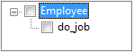

Push Down
Description
The Push Down Method refactoring removes a method from the super class and pastes
it into all its child classes. This makes sense if you realize that every child class needs
the method to behave in its own way and it is not possible to generalize the behavior in
the super class.
If a method in a super class is logically better placed as in its deriving
classes, then you also need the Push Down Method refactoring.
Based on the the Eclipse JDT (Java Development Tools) this refactoring does not give the
user the choice whether the method will be pushed down into all or only a subselection
of the childclasses.
Conditions
There has to be at least one class that contains a method and is subclassed.
Options

In the tree all classes which have subclasses and contain at least one method are listed. Subnodes of
of each class show the methods. Every checked method is pushed down into the subclasses.

Feedback